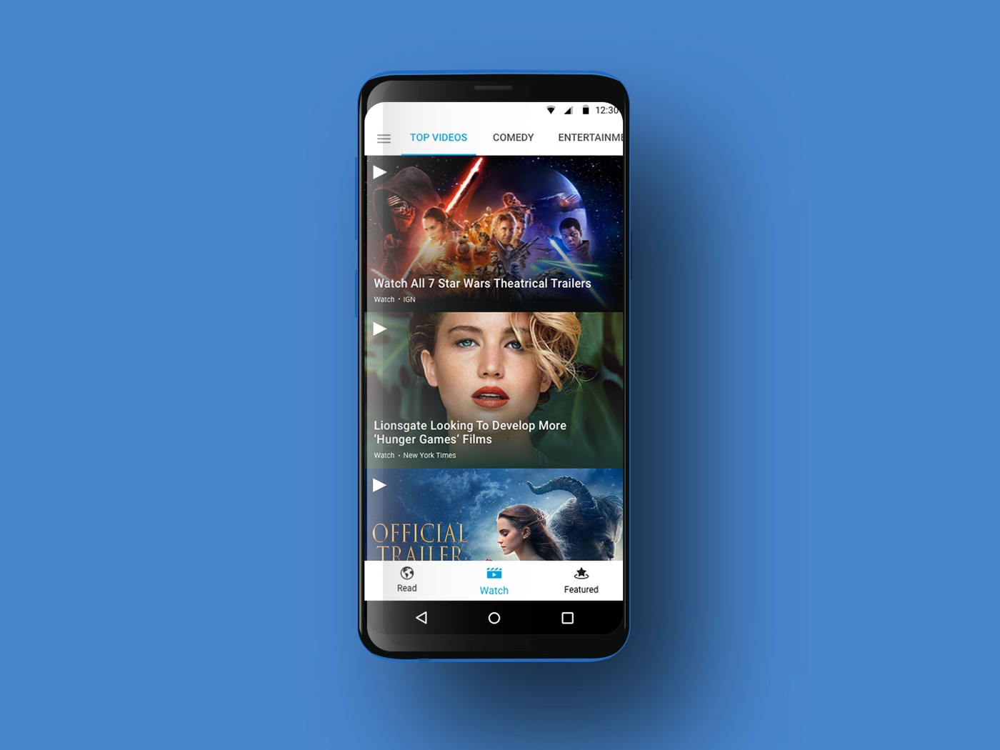
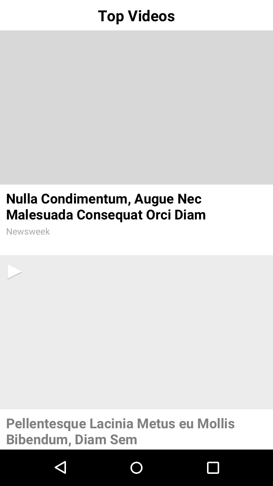
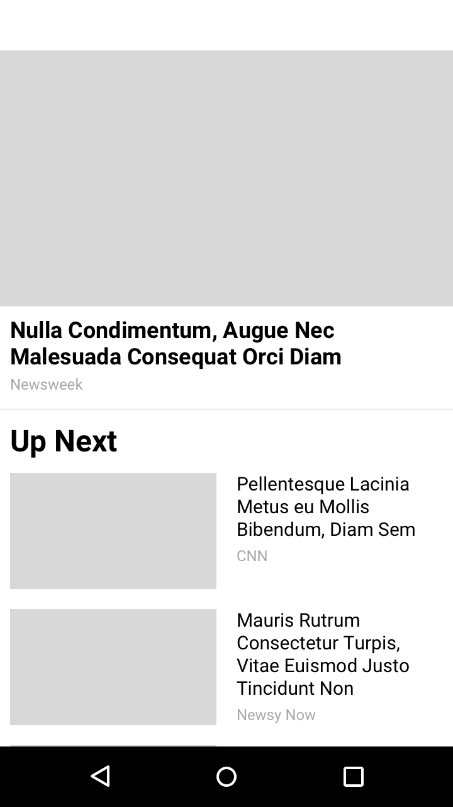
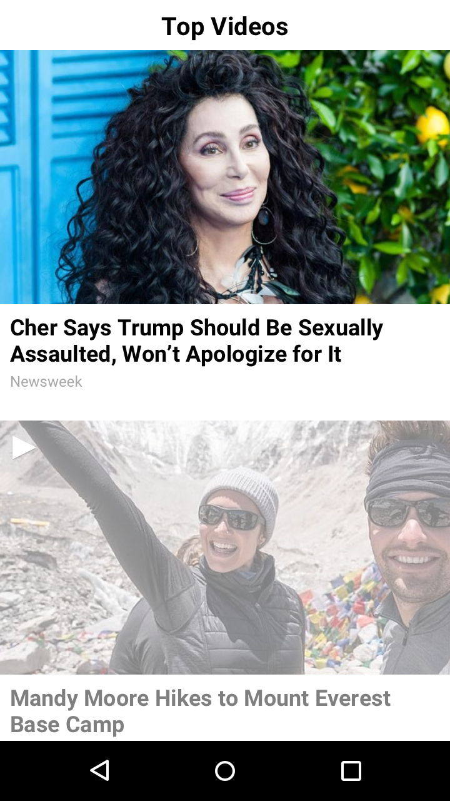
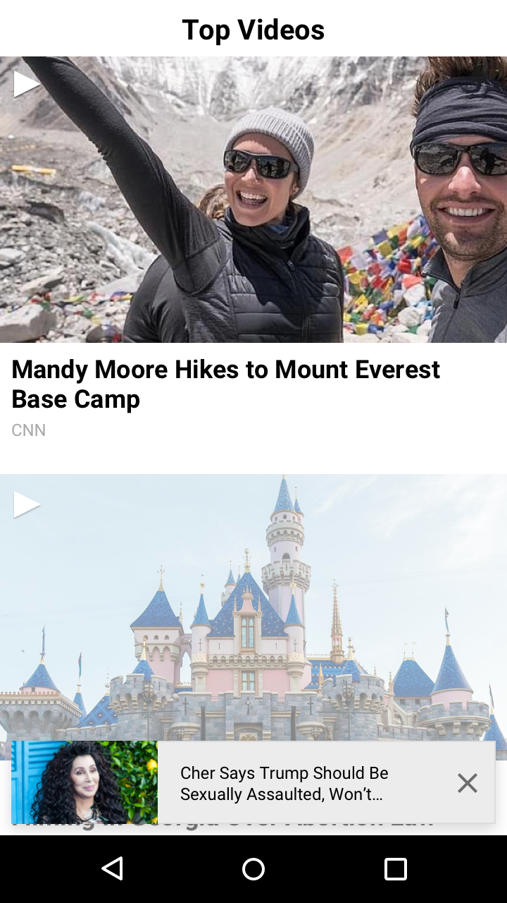
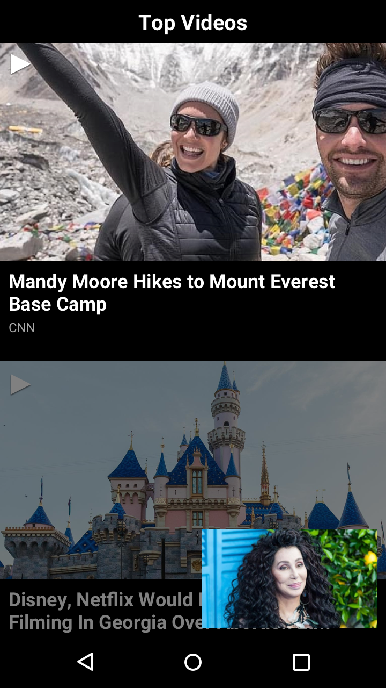
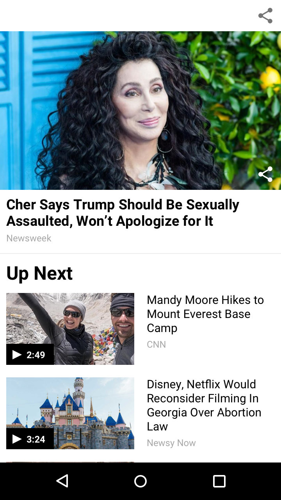
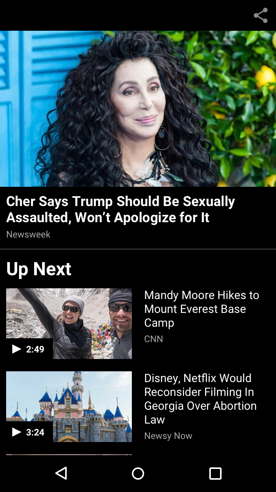
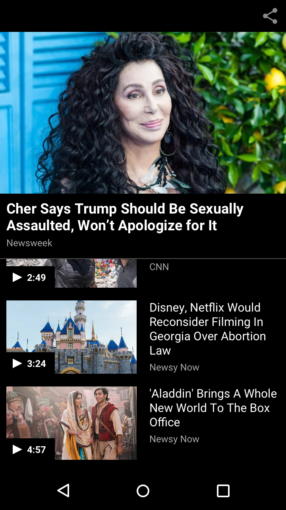
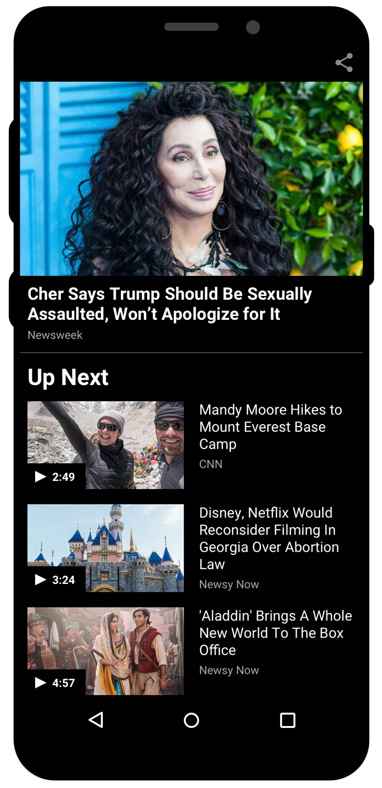

AT&T Live was a native Android app I designed alongside the att.net portal redesign — two AT&T products at the same time. It combined att.net email with news, trending videos, and featured content. The AT&T product team asked us to increase video engagement: the original player launched a widescreen modal, played one video, and ended on a black screen — a dead end with no path to more videos.

Research & wireframes: I studied how Apple News, CNN, NBC News, NYTimes, and YouTube handled video, then wireframed two playlist-driven directions. (A horizontally scrollable playlist was ruled out early: left/right swipes were already used for screen navigation.)


Refinements: both directions went to high fidelity, in light and dark themes, with scroll states worked through. V1 minimized the playing video to the bottom on scroll; V2 kept it pinned at top with a compact playlist below.






Final design: V2 won — smaller thumbnails surfaced more videos faster while the active video stayed in focus, and user testing validated it as the clear winner.
